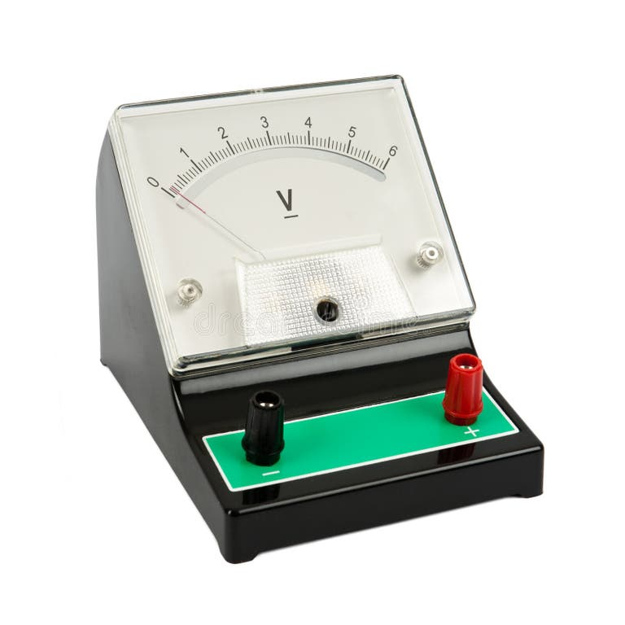
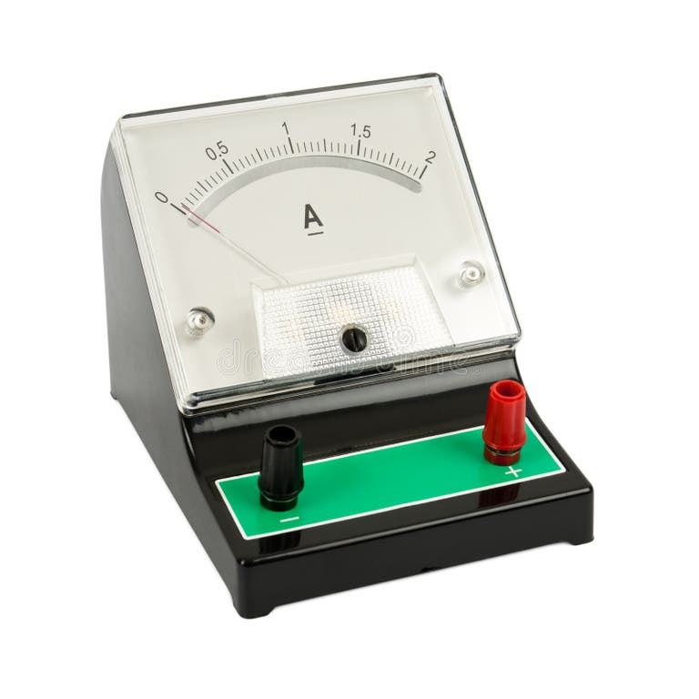
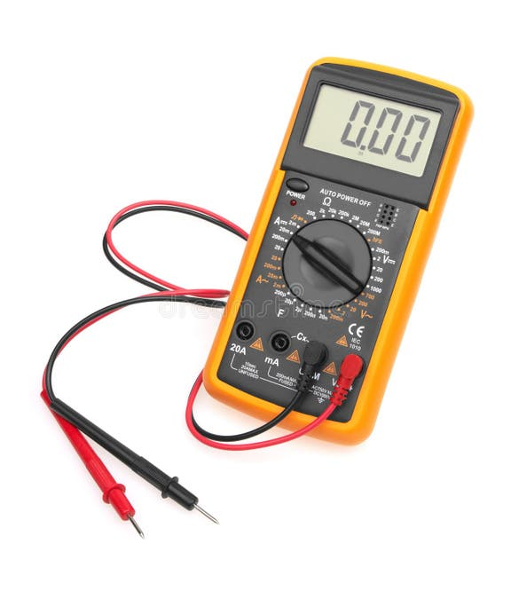
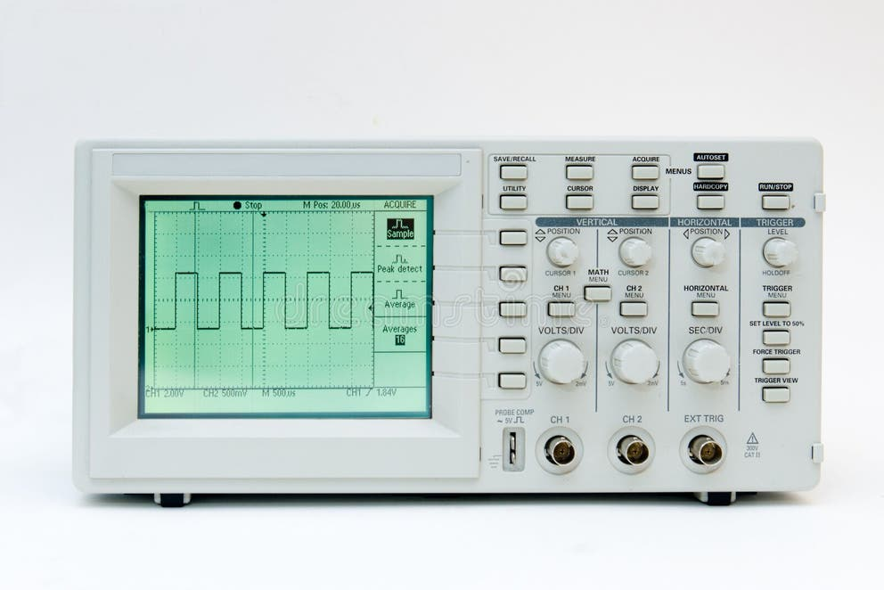

Types of Electric Circuits
An electric circuit is a closed loop or path through which electric current flows. Depending on the continuity and load resistance of the path, circuits operate in three fundamental configurations:
Closed Circuit
A complete unbroken loop allows continuous electric current to flow from the voltage source, through the load (lamp), and back.
Open Circuit
A break in the conductive path (like an open switch) prevents electrons from flowing. Infinite air resistance blocks current.
Short Circuit
A low-resistance bypass path directly connects power terminals. Uncontrolled excessive current creates dangerous heat & spark risks.
Fundamental Quantities & AC / DC
Fundamental Electrical Parameters
Voltage (V)
Volt [V]Electric potential difference; the electromotive force driving charge through a conductor.
Current (I)
Ampere [A]The rate of electric charge flow passing a given point per unit time ($I = Q / t$).
Resistance (R)
Ohm [Ω]The opposition to the flow of electric current, dissipating energy as heat.
Cap. (C) / Ind. (L)
Farad [F] / Henry [H]Ability to store electrical energy in electric fields (C) or magnetic fields (L).
Comparison: Direct vs Alternating Current
| Feature | Direct Current (DC) | Alternating Current (AC) |
|---|---|---|
| Direction | Flows in ONE single direction | Reverses direction periodically |
| Frequency | Zero (0 Hz) | 50 Hz or 60 Hz |
| Typical Source | Batteries, Solar Cells, DC Supplies | Wall Outlets, Power Grids, Inverters |
| Transmission | Efficient for short distances / devices | Efficient long distance (Transformers) |
Ohm's Law: V = I × R
Ohm's Formula Triangle
Current (I) is directly proportional to Voltage (V) and inversely proportional to Resistance (R).
Live Interactive Experiment Power P = 0.00 W
Electronic Components & Circuit Symbols
Power Sources
Letter: VProvides potential difference (DC constant voltage or AC sinusoidal oscillating voltage) to drive current in a circuit.
Resistor
Letter: RLimits electric current flow and drops voltage levels. Dissipates energy in the form of heat.
Capacitor
Letter: CStores electrical energy electrostatically in an electric field between conductive plates.
Inductor (Coil)
Letter: LStores energy in a magnetic field when electric current flows through its wire turns.
Diode
Letter: DA semiconductor valve that allows electric current to flow in only one forward direction.
Transistor (NPN)
Letter: QA 3-terminal semiconductor device used as an electronic switch or signal amplifier.
Electrical Measuring Instruments

Voltmeter
Measured Unit: Volts [V]
- Connected in Parallel across components.
- Extremely high internal resistance (draws minimal current).
- Measures electrical potential difference between two points.

Ammeter
Measured Unit: Amperes [A]
- Connected in Series within the branch path.
- Near-zero internal resistance (prevents altering circuit current).
- Measures rate of electron charge flow.

Digital Multimeter (DMM)
Multi-range: V, A, Ω, F, Hz
- All-in-one handheld diagnostic instrument for electrical troubleshooting.
- Features auto-ranging, continuity buzzer, and diode testing.
- High accuracy digital LCD measurement display.

Oscilloscope
Waveform Graph: Voltage vs Time
- Visualizes high-frequency AC dynamic signals over time.
- Displays signal amplitude, frequency, phase shift, and distortion.
- Essential for digital signal analysis & RF electronics.